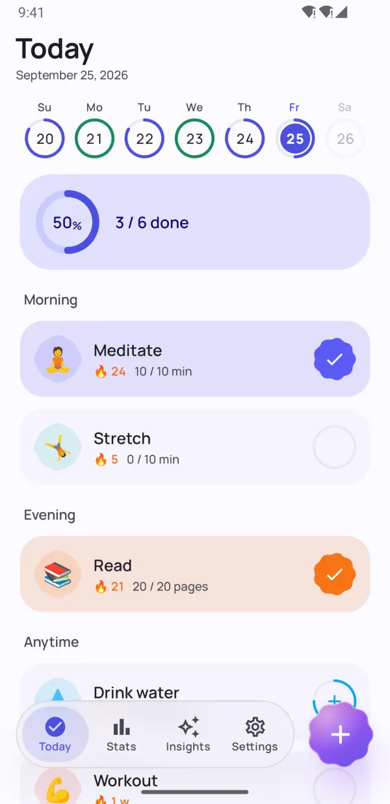
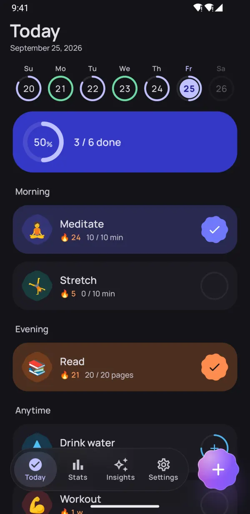
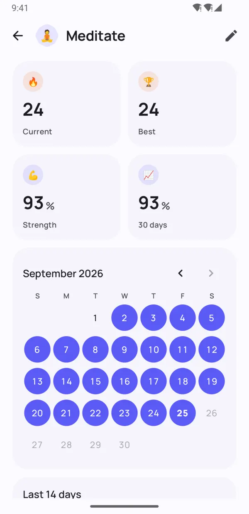
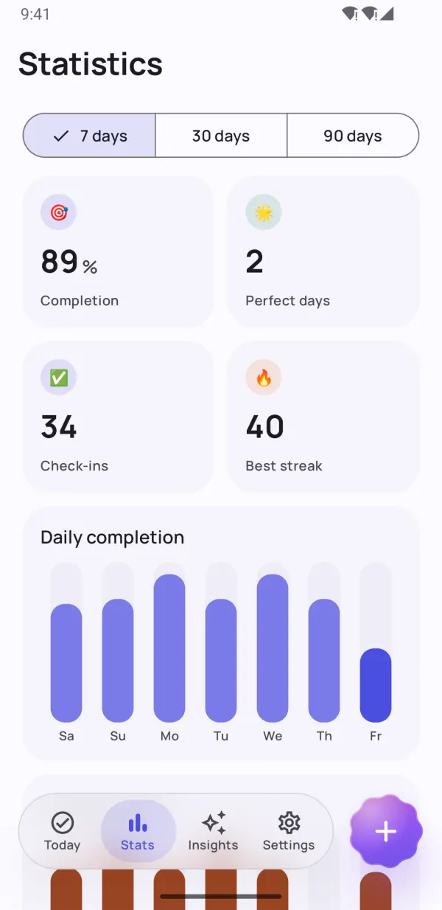
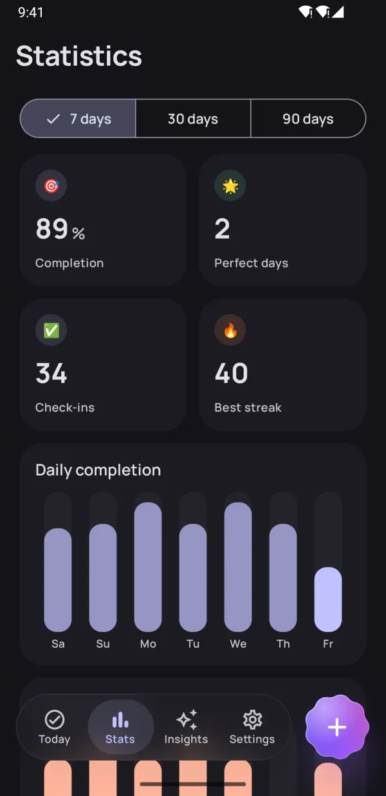
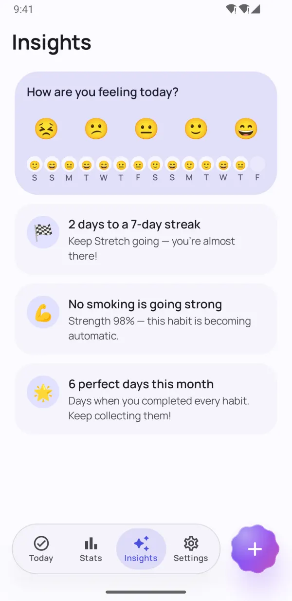
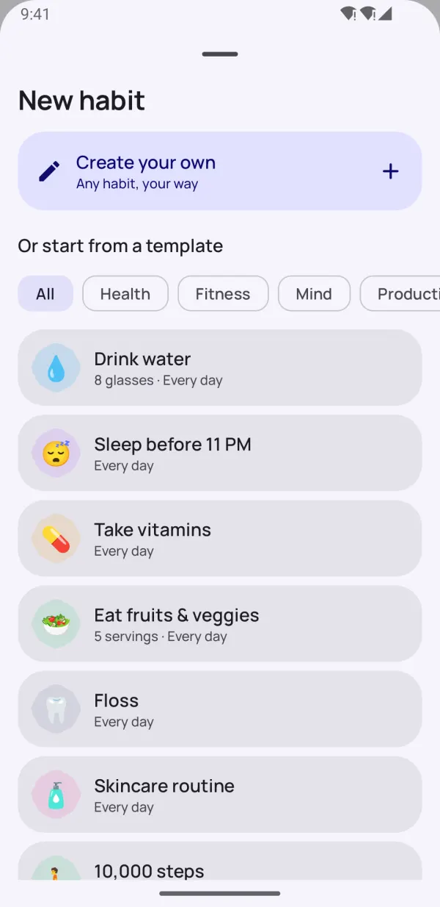
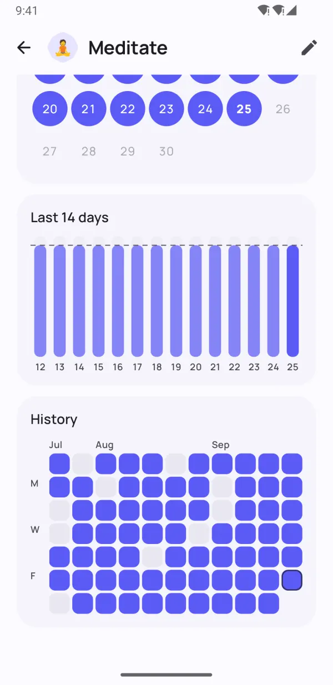

Small habits.
Big change.
Dotday helps you build good habits and break bad ones — without pressure. Check in with one tap, keep your streak alive on busy days and see what really works for you.
- Free to use
- No sign-up
- Data stays on your phone
- 13 languages


Built to help habits stick
Everything you need to stay consistent — and nothing that gets in the way.
Your whole day, one tap away
Morning, afternoon and evening groups turn your routine into a simple checklist. Tap once and it's done.
- Yes/no, counts, timers and quit habits
- Week strip shows every day at a glance
- Done and Snooze right from the reminder

Streaks that forgive a bad day
Rest days, flexible schedules and streak freezes keep you going. Habit strength shows how solid a habit really is — not just how long your streak is.
- Skip a day without breaking your streak
- Streak freezes for busy or sick days
- Habit strength score from 0 to 100%


See your real progress
Heatmaps, calendars and completion trends show exactly how you're doing over 7, 30 and 90 days.
- Heatmap of every habit
- Best streak and completion rate
- Beautiful in light and dark mode

Insights that keep you going
Log your mood in a second and Dotday finds what really works: your best and hardest days, and which habits lift your mood.
- Mood check-in with one tap
- Nudges before your next milestone
- Find the habits that make you happier
Small details, big difference
Thoughtful features that make tracking effortless.
Home-screen widgets
Check off today's habits, watch a streak or a heatmap — without opening the app.
Reminders that work
Mark a habit done or snooze it right from the notification.
Built-in timer
Time-based habits get a timer with a live notification.
Health Connect
Steps, sleep and workouts can complete habits automatically.
40 templates
Water, reading, workout, meditation, no smoking — start in seconds.
Plan your day
Group habits into morning, afternoon and evening.
Notes and moods
Add a note to any day and see how habits affect your mood.
Dark mode & AMOLED
Material You colors and a pure-black theme for OLED screens.
Backup & export
Export everything to JSON or CSV with Pro, and restore it on a new phone.
Take a look inside
Build habits that stick See your real progress Your stats at a glance Insights that keep you going 
Start in seconds with 40 templates Beautiful in dark mode 
Every day, beautifully tracked Private. No account. No ads.
Pick your habits
Choose from 40 templates or create your own — any habit, your way.
Check in every day
One tap on the Today screen, a widget or the notification.
Watch them stick
Streaks, habit strength and insights show your progress grow.
Private by design
No account. No sign-up. No ads. Your habits, notes and moods are stored only on your phone — we never see them. Privacy Policy
- No account
- No ads
- Offline
- Your data, your phone
Unlock everything with Pro
The core app is free forever. Go Pro for unlimited habits and every feature — try it free for 7 days.
- Unlimited habits
- Full history and 90-day stats
- All insights and mood correlations
- Health Connect auto-tracking
- All widgets
- 5 streak freezes every month
- Up to 5 reminders per habit
- Export to JSON and CSV
Monthly, yearly or a one-time lifetime purchase. Cancel any time in Google Play.
Frequently asked questions
Is Dotday free?
Yes. The core app is free forever: up to 5 habits, reminders, streaks, the Today widget and 30 days of statistics. Dotday Pro unlocks unlimited habits and every feature, with a 7-day free trial.
Do I need to create an account?
No. Dotday works without an account, sign-up or internet connection. Just install it and start.
Where is my data stored?
Only on your phone. Your habits, notes and moods never leave your device. With Pro you can export a JSON or CSV backup at any time.
What happens if I miss a day?
Your progress doesn't vanish. You can skip a day as a rest day, use a streak freeze, or set a weekly goal instead of a daily one. Habit strength drops gently instead of resetting to zero.
What kinds of habits can I track?
Four types: yes/no ("meditate"), counts ("8 glasses of water"), timers ("30 minutes of reading") and quit habits ("no smoking").
How do I move my habits to a new phone?
With Dotday Pro, open Settings → Your data → Export backup and save the JSON file. On the new phone, install Dotday and choose Restore from backup — restoring is free.
Is there an iPhone version?
Not yet — Dotday is currently available for Android on Google Play.
How do I cancel Pro?
Open Google Play → Profile → Payments & subscriptions → Subscriptions, choose Dotday and tap Cancel. A lifetime purchase never needs cancelling.